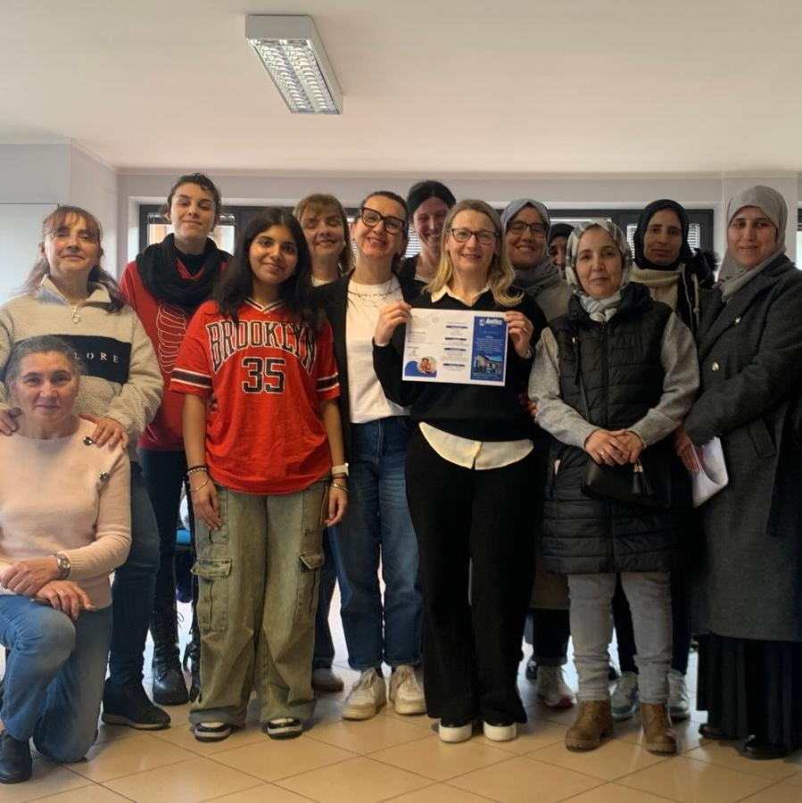

Progetti
Progetti
Siamo attivamente impegnati nel territorio, sotto puoi trovare una panoramica degli eventi e dei progetti a cui stiamo o abbiamo lavorato.
Corso di formazione per assistenti familiari
Nel 2024 abbiamo realizzato un percorso gratuito di 30 ore rivolto a chi desidera avviare o rafforzare la propria esperienza nell’assistenza domiciliare. Il corso ha fornito strumenti pratici, relazionali e culturali per affrontare con maggiore consapevolezza e competenza il lavoro di cura. I contenuti trattati spaziano dalla mobilizzazione sicura della persona fragile all’alimentazione, fino al ruolo della relazione nella quotidianità assistenziale.
Seminario 'Prendersi Cura dell'Altro'
A Marzo 2024 si e' svolto il seminario "Prendersi Cura dell'Altro", un evento dedicato alla sensibilizzazione e formazione sui temi del caregiving e del sostegno psicologico.
Incontri tematici con esperti
Durante l’anno, abbiamo promosso una serie di incontri formativi con professionisti del settore sociosanitario. Tra i temi trattati: l’autismo, l’umanizzazione delle cure, il rapporto tra tempo e relazione, le basi giuridiche dell’Amministrazione di Sostegno. Gli appuntamenti hanno offerto momenti di aggiornamento, confronto e approfondimento su aspetti centrali per chi lavora nell’ambito dell’assistenza.
Sono intervenuti:
– Matilde Vagnini (AUSL Modena) sull’umanizzazione delle cure
– Chiara Arletti (Istituto Charitas) sul tema dell’autismo
– Angela Azzaro sulla cura solidale
– Devis Trioschi (AUSL Modena) su mobilizzazione e abilità residue
– Luciano Gallo (ANCI ER) sul rapporto tra enti locali e Terzo Settore
Cosa dicono di noi
I nostri progetti sono apprezzati dagli enti locali e dalla comunita' che apprezzano il nostro approccio basato su una cura che mette al centro ascolto, accoglienza, empatia, formazione e inclusione
"Maranello: Inaugurata la sede dei Volontari in Campo"

Modenatoday
26 Maggio 2025"Curacari, una onlus per i caregiver: Lavorerà su tutto il distretto"
Il Resto del Carlino
14 Dicembre 2023"Prendersi cura dei caregiver: nasce l'associazione Curacari"
Maranello Oggi
Mercoledì 13 Dicembre 2023"Curacari, la rete del welfare amplia i servizi per gli anziani"
Gazzetta di Modena
"A Maranello un percorso di formazione per gli assistenti famigliari"